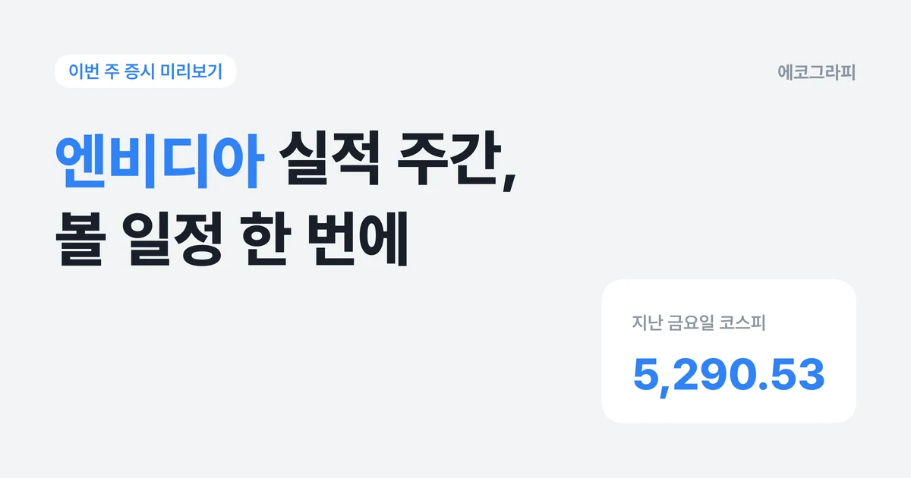
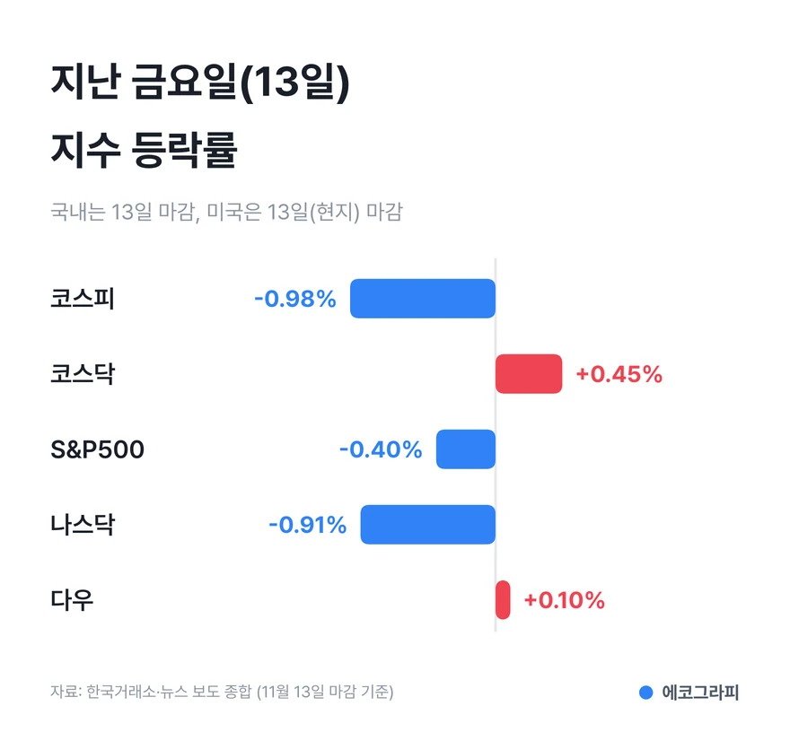
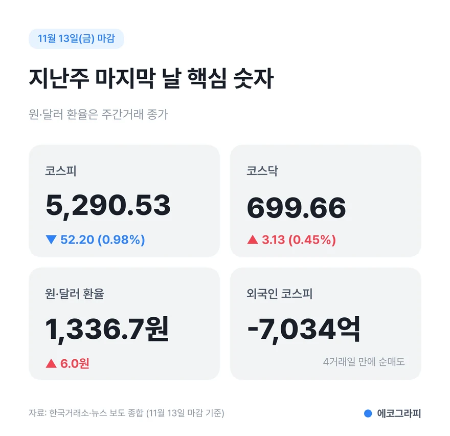
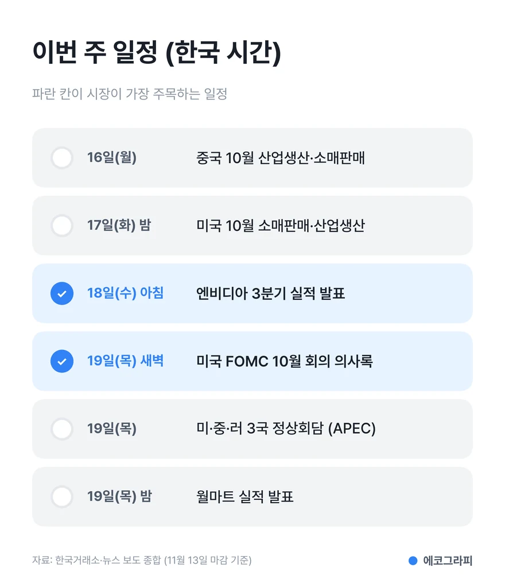
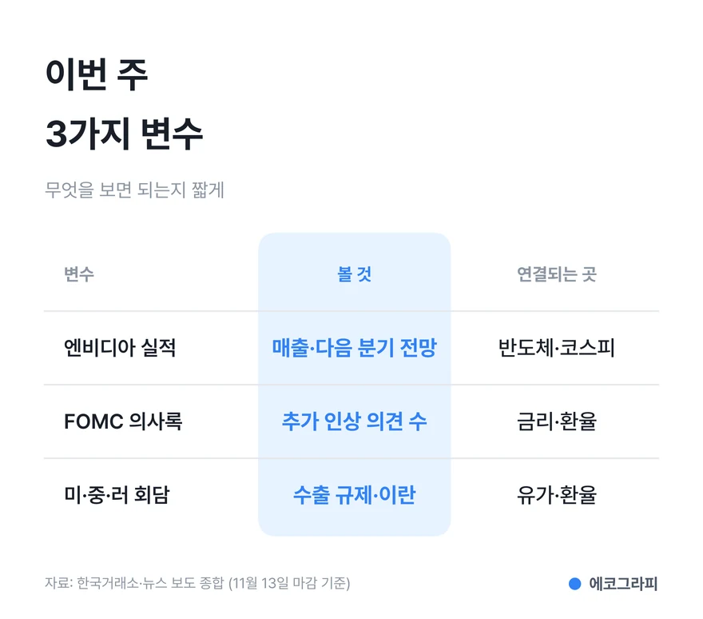

13일(금) 코스피는 장 초반 5,500선을 잠깐 넘었다가 오후에 밀리면서 5,290.53, 전날보다 52.20포인트(0.98%) 내려 끝났어요. 코스닥은 장중 4% 넘게 오르기도 했지만 대부분 반납하고 699.66(+0.45%)으로 마감했어요.

코스피를 끌어내린 건 외국인이었어요. 외국인은 코스피에서 약 7,034억 원을 순매도했는데, 4거래일 만의 순매도예요. 특히 SK하이닉스(-3.03%)를 많이 팔았고, 삼성전자도 0.96% 내렸어요. 반면 금융주는 강했어요. 신한지주(+5.65%), KB금융(+4.74%)이 크게 올랐어요.
원·달러 환율은 1,336.7원으로 6.0원 올랐어요. 5거래일 만의 반등이에요. 국제유가가 오르면서 달러가 강해진 영향이 컸어요.

미국은 같은 날 기술주가 약했어요. S&P500은 0.40%, 나스닥은 0.91% 내렸고, 다우는 0.10% 올라 보합권이었어요. 그래도 한 주 전체로 보면 세 지수 모두 2%대 올라 여러 주 이어진 하락 흐름을 끊었어요.
한 줄 정리: 이번 주는 "AI 반도체 기대가 버틸까"와 "미국 금리가 더 오를까"를 동시에 확인하는 주예요.
미국 일정은 한국 시간으로 바꿔 적었어요. 미국 장 마감 뒤 발표는 우리 시간으로 다음 날 아침이에요.


증권사들은 이번 주 코스피가 크게 흔들릴 수 있다고 보고 있어요. 엔비디아 실적이 좋으면 반도체 투자 심리가 살아날 수 있지만, 규제나 경영진 공백에 대한 걱정이 크면 반대로 움직일 수도 있어요. 숫자 하나에 휩쓸리기보다 발표 내용과 그 뒤 외국인 수급을 함께 보는 게 좋아요.
이번 주 해볼 것: 보유한 ETF나 펀드에 반도체 비중이 얼마나 되는지 확인해 보세요. 18일 아침 변동이 클 수 있어요.
미국 17일(화) 장 마감 뒤 발표돼요. 한국 시간으로는 18일(수) 아침이에요.
회의는 금리를 정하는 자리이고, 의사록은 그 회의에서 오간 이야기를 약 3주 뒤 공개하는 기록이에요. 이번 의사록은 10월 회의 내용이에요.
외국인 입장에선 원화 자산의 달러 환산 가치가 줄어 매도 유인이 생길 수 있어요. 다만 수출 기업 실적에는 도움이 되기도 해요.
반도체 수출 규제, 이란 문제에 따른 유가가 회담 결과에 따라 달라질 수 있어서 반도체주와 환율에 영향을 줄 수 있어요.
※ 2026년 11월 기준으로 정리한 글입니다. 세율·제도는 바뀔 수 있으니 거래 전 증권사·국세청 안내를 한 번 더 확인하세요. 특정 종목·상품의 매수·매도 권유가 아닙니다.